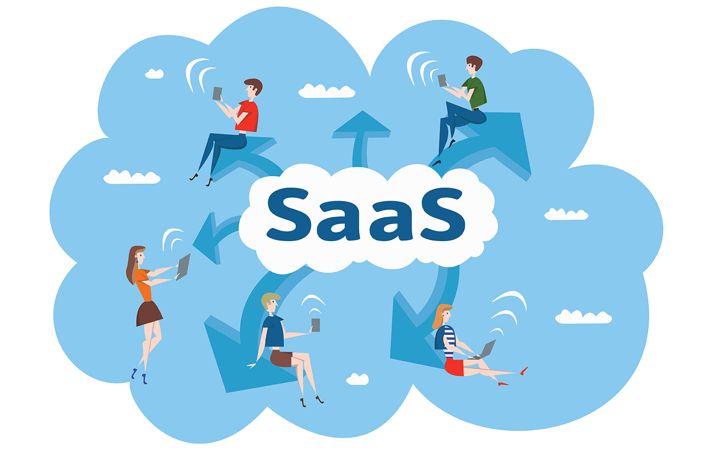
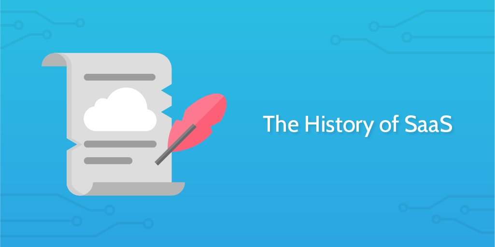
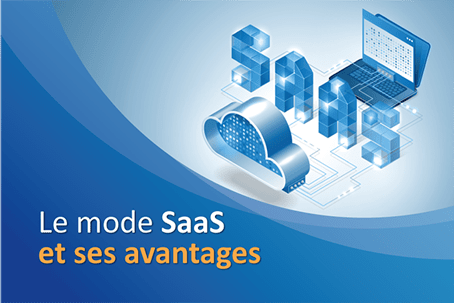

Accueil
Découverte
A Propos
Envie de découvrir les SaaS ? Vous êtes au bon endroit !
Découverte

Qu'est-ce que les SaaS ?

Historique
Comment fonctionne le SaaS ?
Les Applications du SaaS

Les avantages
Les inconvéniants des SaaS